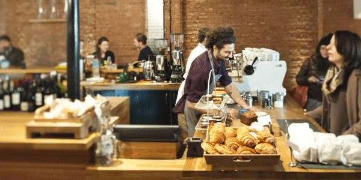
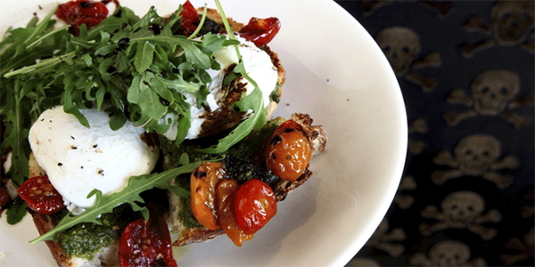

In April 2011 we opened our doors on Exmouth Market, intent on bringing to the neighbourhood the very best coffee possible. Sourcing, roasting and brewing great coffee lead to more, and since then, our Clerkenwell cafe has evolved into a thriving destination for coffee, food, beer and wine lovers alike.
While our focus on serving great coffee has never faltered, we quickly added to our repertoire breakfast, lunch, dinner and weekend brunch services, rapidly receiving acclaim for each. We've been voted Runner Up Best Independent Cafe Europe (Allegra Symposium), Best Vegetarian Breakfast (Observer Food Monthly), 'a great day-time cafe, becoming a major point of interest' (Time Out), and won 'Best Independent Cafe' at the 2012 Cafe Society Awards.
A continually developing focus on conscientious and considered sourcing and preparation underpins everything we do, combined with a desire to always share these goods with our guests in a humble and relaxed way.
"The coffee was really good and the place itself was more than relaxed. I was so comfortable I didn't want to leave. I will definitely return."
— Sophie from London
Making the perfect coffee
Making the perfect coffee
Our very own James shows Time Out London how to make the perfect coffee
"Food and coffee are both exceptional. As expected orange juice is the freshly squeezed variety. You can't go wrong with the breakfast corn fritters or poached eggs with sourdough and tomato kasundi."
— Jing from London